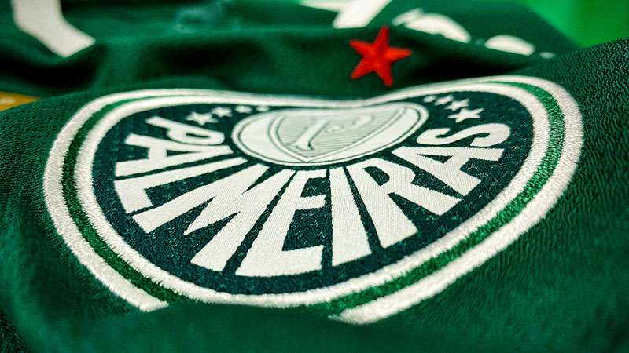

A Sociedade Esportiva Palmeiras, carinhosamente chamada de Palmeiras, é um dos clubes mais tradicionais e vitoriosos do futebol brasileiro. Fundado em 1914, na cidade de São Paulo, o Palmeiras ostenta as cores verde e branca e acumula um impressionante histórico de conquistas. Seu notável sucesso inclui títulos em competições nacionais, como a Série A do Campeonato Brasileiro, e triunfos internacionais, como a Copa Rio de 1951, que é considerada a primeira competição de clubes intercontinentais.
A torcida palmeirense, conhecida como a "Maior Torcida do Brasil", é apaixonada e leal, enchendo o Allianz Parque, o moderno estádio do clube, a cada partida. O Palmeiras não é apenas um clube de futebol, mas também um centro de cultura e entretenimento, com programas sociais e uma ampla gama de atividades para seus torcedores. Sua rica história, juntamente com seu compromisso com a comunidade, solidificam o Palmeiras como um ícone do esporte brasileiro e uma fonte de orgulho para seus inúmeros fãs.
